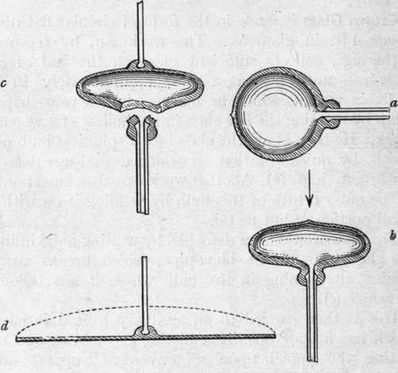
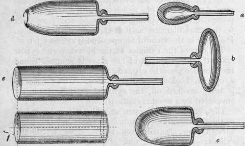

Chapter XII. Crown, Sheet, And Plate Glass
Description
This section is from the book "Glass And Glass Manufacture", by Percival Marson. Also available from Amazon: Glass and Glass Manufacture.
Chapter XII. Crown, Sheet, And Plate Glass
The glass used in windows may be either crown, sheet, or plate.
Crown Glass# is made in the form of circular flat discs about 4 ft. in diameter. The workman, by repeated gatherings, collects sufficient glass on the end of his blow-iron until he has a mass approximately 10 or 14 lb. in weight, which he marvers into a pear-shaped lump by rotating the hot glass in the hollow of a wooden block. He then blows the glass into a spherical bulb (a), which, by quick rotation, is widened and assumes a mushroom shape (b). Another workman attaches a pontil to the outer centre of this bulb by welding it on with a small portion of hot metal.
The blow-iron is then detached by wetting and chilling the glass near to the blow pipe, which breaks away, leaving an opening in the bulb where it has become detached (c).
This is then carried to an auxiliary heated furnace, which has a wide opening emitting great heat, and by resting the pontil upon a convenient support and rotating it quickly the action of centrifugal force and heat causes the glass to spread out at the opening, which becomes larger and larger until the glass finally opens out into a flat circular disc of fairly even thickness throughout, with the pontil still at the centre, forming a bullion point or slight swelling, due to the knob of glass used in affixing it (d).
Next, the workman, keeping the disc in rotation brings it away from the furnace and allows the metal to stiffen and set by cooling, when it is carried to the annealing oven and detached from the pontil. The discs are then stacked up for annealing. When annealed, these are afterwards cut across in sections or squares of convenient size by using a glass cutter's diamond.
Four Stages In Crown Glass-Making
It is evident that the centre portion, containing the bullion point or bull's eye, is useless for plain window glazing, but occasionally these are sought after by glass decorators for use in coloured leaded lights for door panels, etc.
Sheet Glass is made in the form of thin, walled, hollow cylinders of glass, which are split along their length and round the cap and then opened out by heat and allowed to uncurl until each sheet lies out flat. The workman gathers a sufficiency of glass upon his blowiron by repeated gatherings, and marvers it into a ball about as big as one's head. This is blown out (a) and widened by rotating the blow-iron until he gets a mushroom shape (b), with a heavier bulk of glass at the extremity than at the sides.
Six Stages In Sheet Glass-Making
This extra thickness of glass at the extremity of the bulb tends to lengthen the bulb of glass as he swings it in a pendulum fashion, and by blowing and swinging it alternately he gets an extended form (c).
To permit the workman to swing the mass of glass out conveniently to the full length of the intended cylinder, a long, narrow pit or trench is provided below the floor level, and by standing alongside this trench the workman is enabled to swing the glass within the trench at arm's length until the requisite length and width of cylinder are obtained. This work requires a high degree of skill and strength. The shape of the cylinder of glass is now as shown on page 91 (d).
The extremity of this cylinder is now re-heated and opened with the aid of a spring tool with charred wooden prongs, until the opening is enlarged and drawn out to the same diameter as it is throughout the cylinder. It is now in the form of an open-ended cylinder (e).
The cap of the cylinder at the blow-iron end is now cracked off. A thread of hot glass is wrapped round the shoulder near the cap, and the line chilled by using a curved, hook-shaped rod of iron. Whilst the cap is being cracked off, the cylinder is allowed to rest supported by a wooden cradle (f).
The cylinder is now open at both ends and is taken to the flattening kiln or furnace. This kiln has a level, smooth floor, heated from below, upon which the cylinders are flattened out. Placing the cylinder on the floor in front of him, the workman places along the inside length of the cylinder a long red-hot iron rod touching the glass, and then chills the line with a touch from a cold iron rod. This causes a split to take place along the whole length of the cylinder. As these cylinders are split open, they are removed to a hotter zone within the flattening kiln, where the heat causes the cylinder to uncurl and gradually flatten out.
As the sheet becomes flat the workman levels it out with a flat block of charred wood called a polisher. This is attached to a long handle, and is rubbed over the face of the sheet of glass. The weight of the wooden block is just sufficient to smooth out any creases and assists in levelling out any irregularities of the surface. It is essential that the floor upon which the glass is resting should be perfectly smooth and level, and uniformly heated. As each sheet is levelled, it is removed to the annealing oven and afterwards stacked up until cool, after which the rectangular sheets are cut up to the various sizes required for window panes.
It is evident that the crown glass method gives more waste in cutting up, and does not provide such large sheets as the cylinder method. On the other hand, cylinder glass always shows a certain amount of waviness on the surface, and is not so brilliant as crown glass. The better surface of crown glass no doubt is due to the fire-polishing it receives when being expanded out into the disc. It appears to be somewhat difficult to get a perfectly smooth level face to cylinder glass by using the wooden polisher.
Plate Glass
Plate Glass is used as mirror glass and in glazing shop windows and showcases. It may vary between ¼ and ¾ in. in thickness, and is more expensive to produce than crown or cylinder glass.
In the manufacture of best plate glass, the materials are melted in open crucible-shaped pots of varying sizes; sometimes, in making large, heavy plate, their capacity reaches 25 cwts. of metal. When the metal is plain and clear from seeds it is either ladled out into smaller crucible pots for casting, or, as in the case of casting large sheets, the whole crucible of metal is lifted bodily out of the furnace by means of a crane, and, after being skimmed, is conveyed by an overhead travelling derrick to the casting table.
This table is a level iron bench the size of the plate to be cast, the face of which consists of thick sheets of iron plate rivetted together to form a level top; along the whole length of each side of this table is a raised flange of a height sufficient to give the thickness of the plate of glass to be cast: resting on these two outer edges a long, heavy metal roller runs, covering the full width of the table. The crucible of hot metal is brought to a convenient position and the contents poured out on the table in front of the metal rollers. These rollers then travel along and squeeze or roll out the hot metal over the surface of the table to the thickness regulated by the side pieces, which also prevent the metal from flowing over the sides. The empty crucible is then conveyed back to the furnace for refilling.
The cast plate of glass is then trimmed from any excess of glass at the ends, and when set and stiff is lifted at one end slightly and pushed forward into a conveniently situated annealing oven, where it is re-heated and subjected to a gradually diminishing temperature to anneal it. The plate of glass, as delivered from the annealing oven, shows surfaces somewhat rough, wavy, and uneven, from the marks left by the table and the roller, and it has to be ground and polished level and smooth on both sides. This is done by fixing one face of the glass plate in a plaster of Paris bedding and setting it within a mechanical grinding machine.
This machine carries several revolving arms, to which are attached other smaller plates of glass. These are Used as the rubbers, a slurry or paste of sharp sand and water, or abrasive powder, being interposed between the two. The revolving circular motion of the arms causes a grinding action between the two plates, which wears down any irregularities and gives a more even face. After this, finer grades of abrasive materials are employed, and, finally, polishing powder, until the face of the glass plate is polished smooth and level. The large plate of glass is then reversed and the process of grinding resumed on the other side.
Much care is necessary in handling these large plates, and every attention is necessary and devoted to get the largest pieces of plate without defects. All portions showing defects have to be cut away, and, consequently, reduce the size of the plate when finished.
In another method of making plate glass the molten metal is fed between two or more parallel rollers, which are spaced apart to the thickness of the glass required (about ¼in.). These rollers squeeze the glass out to a uniform thickness. A roughly decorated surface is sometimes given to this glass intentionally, by the metal rollers being indented with some form of set star pattern. This glass is not ground or polished, and is sold under the name of muffled or cathedral glass. It is mostly used for roof lighting, where the transparency may be somewhat obscured.
Wired glass, or strengthened plate, is formed by embedding in the soft glass, whilst being rolled, a network of metallic wire of special composition to suit the temper of the glass. This wire is fed from a separate roller into the space between the parallel rolls as the hot metal is fed in from either side. It is necessary that the wire should be made from a metallic alloy which is not easily oxidised. Another method of strengthening plate glass consists in sealing together two plates with an intersecting film of celluloid.
A decorated coloured rolled plate is made for use in leaded lights by mixing portions of several differently coloured glasses together in a small pot and slightly agitating the contents so as to intermix the respective colours. When the glass is rolled out, a pretty agate or marbled effect is obtained, due to the distributed coloured glasses becoming intermixed. As a rule, these glasses are more or less opalescent, and are only used for decorative purposes, church lights, etc.
Continue to:
- prev: Making A Wine-Glass. Continued
- Table of Contents
- next: Chapter XIII. Tube, Cane, And Chemical Glassware
Tags
glass, manufacturing technology, furnace, glassware, wine glass